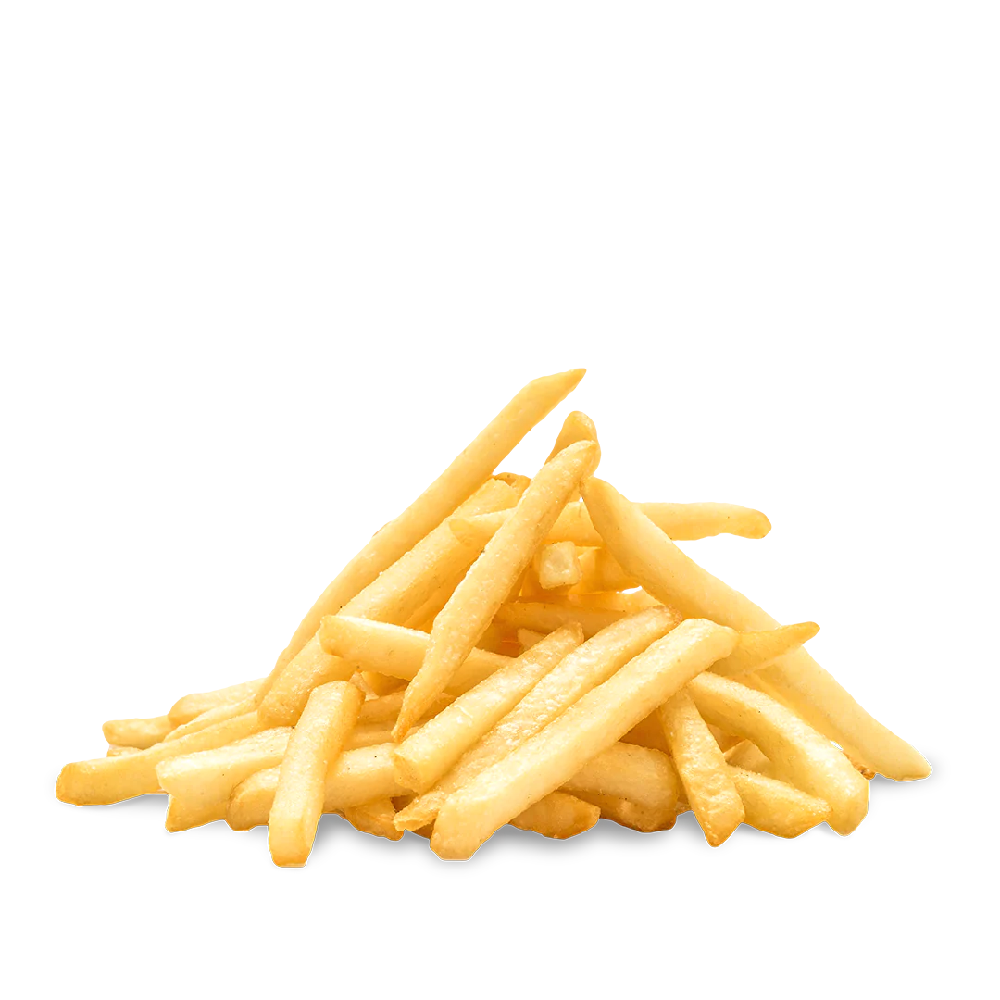

The Crispy Journey
French fries, those golden and crispy delights that have become a global culinary sensation, have a history as rich and diverse as their flavors. As we embark on a journey through time, let's explore the origins and evolution of French fries, drawing insights from various sources that shed light on this beloved side dish.
The simple combination of potato, oil, and salt has evolved into countless variants, from the classic shoestring to the indulgent poutine. Join us as we explore the rich history, diverse types, and a simple recipe to create your own homemade crispy delights.
Unraveling the History of French Fries
Who Invented French Fries?
Though potatoes are a staple food across much of Europe these days, the tuber wasn't quite so popular in the continent just a few hundred years ago. In fact, it wasn't even introduced to Europeans until the 16th century, when Spanish forces brought the potato from Peru back to their home country. From there, it made its way to Italy and then to the surrounding countries.
The Case For Belgium
At the time the potato was first introduced to Europe, Spain controlled much of what is now Belgium. This means the country's citizens would've likely been some of the first in the continent to access the root veggie. According to some accounts, the French fry's history in Belgium dates back to the 1700s. Belgian people traditionally fried very small fish to eat with their meals. When the rivers froze over in the winter, they were forced to turn to the next best thing: the potato, which they sliced thinly to replicate the size of the tiny fish. As for the dish's modern day name, French fries, many people believe French soldiers were introduced to fried potatoes by the Belgians during the Franco-Austrian war of 1859. According to this theory, even though France didn't invent fries, the country popularized sliced and fried potatoes throughout the rest of the world.
The Case For France
It wasn't so easy for potatoes to make their way into French diets. Most people in the country turned up their noses at the foreign vegetable, and it was considered edible for only hogs. French pharmacist and agronomist Antoine-Augustin Parmentier famously championed the potato, exposing notable people like Benjamin Franklin and Marie Antoinette to his favorite vegetable. "He also would hire armed guards to surround his potato patch, to try to convince people that what was in the patch was very valuable," according to TodayIFoundOut.com. "He would then tell the guards to accept any bribes they were offered by people and let them 'steal' the potatoes." Despite Parmentier's valiant efforts, potatoes wouldn't be widely accepted by the French people until a famine in 1785 made them almost impossible to avoid. At some point over the next few decades, Parisian chefs began to cut potatoes into strips and fry them. "Frites," as they're called, quickly became a popular street food sold by push-cart vendors.

Are They Actually Belgian?
However, the question of who Invented french fries is a hotly disputed topic between the Belgians and the French. Belgium has even petitioned UNESCO so that the French fry may be recognized as a prominent part of Belgian cultural heritage. Many Belgians insist that the name ‘French fry’ is a misnomer, coming about because the wider world cannot differentiate between the different Francophone cultures. Some sources, including Belgian journalist Jo Gerard and chef Albert Verdeyen, claim that French fries originated in Belgium long before they came to France. Folklore states they were invented in the Meuse Valley by the poor villagers living there. The citizens of this area were particularly fond of frying fish caught from the Meuse River. In 1680, during one very cold winter, the Meuse River froze over. Not being able to access the small fish that they caught from the river and fried, the people instead cut potatoes into strips and fried them in oil. And thus, the ‘French fry’ was born. This story has been disputed by Leqlercq, who asserted first that potatoes were not introduced in the area until the 1730s and so French fries could not have been discovered until later. Further, he added that villagers and peasants would not have had the means to deep fry potatoes in oil or fat as that would have been much too expensive and they might have been lightly sauteed at best. Fat of any kind would not have been wasted on frying since it was difficult to obtain and was generally consumed by ordinary people raw on bread or on soups and stews. Whatever the origins may have been, if you want to eat good fries while in the Francophone region, you should head to Belgium rather than France in this day and age. Made with quality Dutch potatoes, most French fries in Belgium are fried in beef tallow rather than oil and are considered a main dish in themselves rather than simply a side. In Belgium, French fries are the star player and not just an added garnish to a plate of hamburgers or sandwiches.
French Fries Variants
How to Make Homemade French Fries
Homemade french fries are crazy delicious. The best fries are double-fried, first at a lower temperature to cook them through, then again in hotter oil to crisp them up to golden perfection. This recipe is very flexible—you can make as many or as few fries as you like. Plan on one large potato's worth of fries per person if serving as a side dish. Homemade French fries are a traditional accompaniment with hamburgers, grilled steak, or steamed mussels. Besides potatoes, you'll need a large pot and enough vegetable oil, canola oil, or lard so that it fills the pot about 2 inches deep. You'll need a slotted spoon or spider, plenty of paper towels for draining, and a thermometer (not required but highly recommended). You may also want a cooling rack positioned over a baking sheet as an initial draining spot before transferring the oily fries to paper towels. And, of course, you'll need salt for seasoning.
Ingredients
- 2 ½ pounds russet potatoes, peeled
- 1 cup vegetable oil for frying
- 1 cup all-purpose flour
- 1 teaspoon garlic salt
- 1 teaspoon onion salt
- 1 teaspoon paprika
- 1 teaspoon salt
- ½ cup water, or as needed
Procedure
Cut the Potatoes
Wash and dry the potatoes. Cut each potato in half, then slice each half into 1/4-inch planks, and then into 1/4-inch sticks. Place them in a bowl of cold water to prevent browning.
Make the Batter
Sift the flour, garlic salt, onion salt, paprika, and salt together in a large bowl. Gradually stir in the water until the batter is smooth and a thin paste. It should be thin enough to coat the potatoes, but not too thick.
Dip and Fry
Drain and pat the potato sticks completely dry. Dip them in the batter and drop them into a pot with hot vegetable oil. Fry until they are golden and crispy.
Drain and Serve
Once done, remove the fries from the oil. Drain them on a cooling rack set over a pan or on layers of paper towels. Season with salt while still hot and serve immediately.